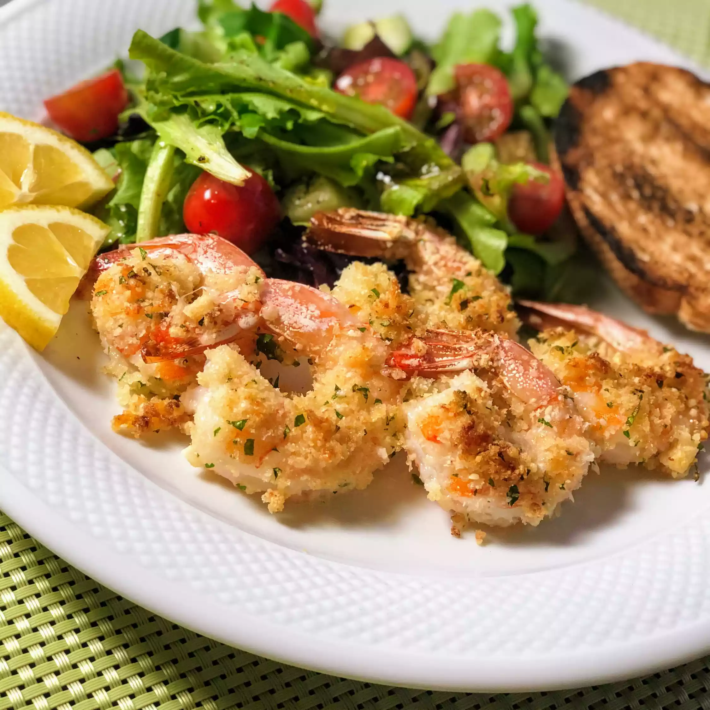

Garlic Parmesan Shrimp
Delicious crispy shrimp coated in a bread crumb-Parmesan mixture. My family can't get enough of it! I would suggest doubling the recipe if you have very large eaters because this is addictive! Serve with pasta and salad.
Prep Time: 10 mins
Cook Time: 20 mins
Additional Time: 10 mins
Total Time: 40 min
Servings: 4
Yield: 4 serving
Ingredients :
nonstick cooking spray
1 cup dry bread crumbs
1 cup shredded Parmesan cheese
2 tablespoons dried parsley
1 ½ teaspoons garlic powder
1 pound large shrimp, peeled and deveined
2 tablespoons butter, melted, or more to taste